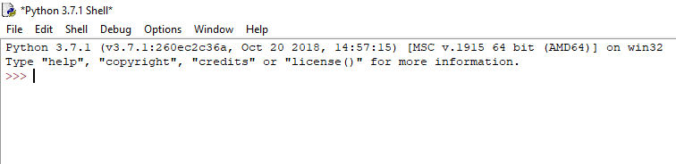
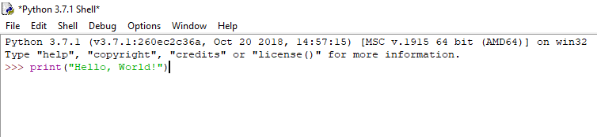
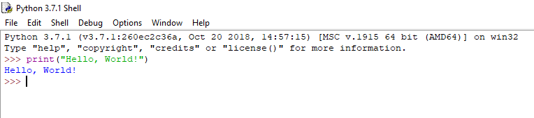
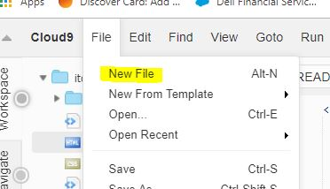

Get Started with Python
Welcome!
This is a quick tutorial site to get started with Python. You will find instructions to get started with the installation of Python. You will also find a tutorial on your first program, Hello World.
Install Python
The information below comes from the Python.org Beginners Guide.
Before you start, you will need Python on your computer, but you may not need to download it.
First of all check that you don't already have Python installed by entering python in a command line window. If you see a response from a Python interpreter it will include a version number in its initial display. Generally any recent version will do, as Python makes every attempt to maintain backwards compatibility.
If you need to install Python, you may as well download the most recent stable version. This is the one with the highest number that isn't marked as an alpha or beta release. Please see the Python downloads page for the most up to date versions of Python 2 and Python 3. They are available via the yellow download buttons on that page.
- If you're running Windows: the most stable Windows downloads are available from the Python for Windows page.
- If you are using a Mac, see the Python for Mac OS X page. MacOS 10.2 (Jaguar), 10.3 (Panther), 10.4 (Tiger) and 10.5 (Leopard) already include various versions of Python.
- For Red Hat, install the python2 and python2-devel packages.
- For Debian or Ubuntu, install the python2.x and python2.x-dev packages.
- For Gentoo, install the '=python-2.x*' ebuild (you may have to unmask it first).
Hello, World! in IDLE
Now that we have our installation of Python complete, let's write our first program!
First, lets open up IDLE. IDLE stands for Integrated Development and Learning Environment and is the standard interpreter that comes with Python. You can also use other editors such as VS Code, Atom, or Notepad++ which will also be explained below.
When you first open IDLE, you will get the Python Shell which looks like this:

At the prompt, enter print("Hello, World!")which should look like this:

Press ENTER to see your output. If everything was entered correctly, you should see this:

If you got a different result, go back and make sure your input was exactly the same as above. A missing quote or parenthesis will result in an error.
Hello, World! in Cloud 9
Another quick way to get started learning Python without having to worry about a lot of installation and configuration is to use Cloud 9.
Cloud9 IDE is an online integrated development environment, published as open source from version 2.0, until version 3.0. It supports multiple programming languages, including C, C++, PHP, Ruby, Perl, Python, JavaScript with Node.js, and Go. Source: Wikipedia
To get started with Cloud 9 you will first need to create a workspace. For directions on creating a workspace, click here.
Inside your workspace, you will need to start with a new file with a python extension. To do this, click on 'file' in the upper lefthand corner of the screen and select 'new file.' You can name the file whatever you like, as long as you give it the file extension of .py

On line 1 of your new file, type: print("Hello World!")

Now save your file by clicking File > Save. This is very important with python as your code changes will not run when you tell it to if the file is not saved.
Next, in your terminal window, you need to call the file where you wrote your python code. In our case, the file is named "hello.py." In the command window, type "python3 hello.py" Then press Enter.

If you have followed the above steps correctly, Cloud 9 will repeat Hello World back to you. If you are missing any steps, or punctuation, please review your code that you have not missed any punctuation or spaces as the slightest syntax error can cause the program to fail.
Resources
Want to learn Python? First place to start is at Python.org where you can download Python